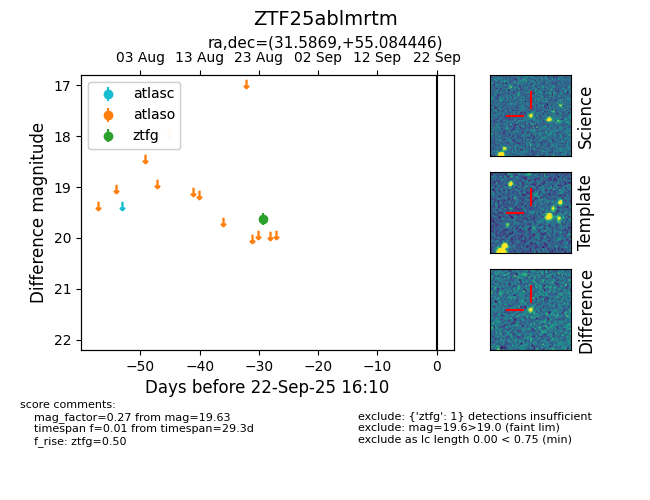

FINK: ZTF25ablmrtm
Lasair: ZTF25ablmrtm
ALeRCE: ZTF25ablmrtm
ZTF25ablmrtm (ztf,fink)
equatorial (ra, dec) = (31.5869,+55.08445)
galactic (l, b) = (133.5849,-6.23038)

last ztfg=19.63
1 ztfg detections